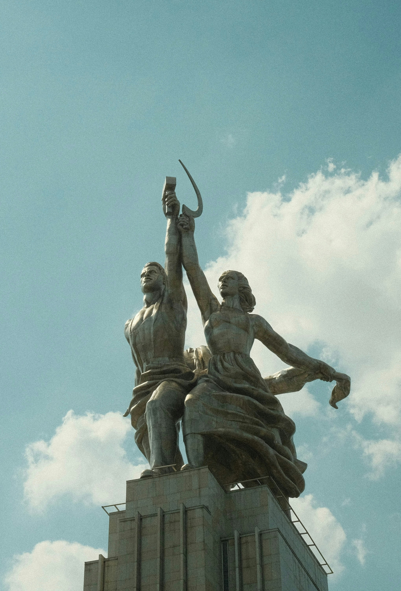
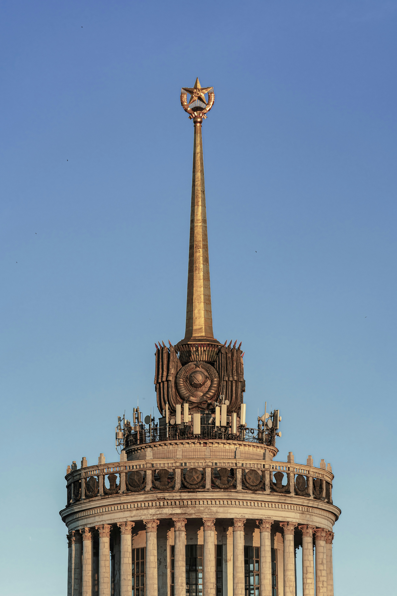
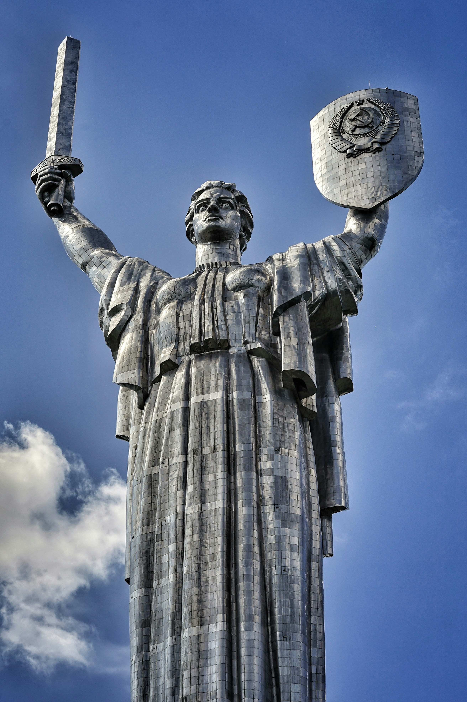

Vlast je preuzeo Petrogradski Sovjet, koji je obrazovao novu Boljševičku vladu - Sovjet narodnih komesara na čelu sa Lenjinom. Nova vlada je smatrala da je najvažnije da se što pre sklopi mir sa Centralnim silama. Kako se revolucija iz Petrograda širila dalje po Rusiji, to je više vojnika prešlo na stranu revolucionara.


